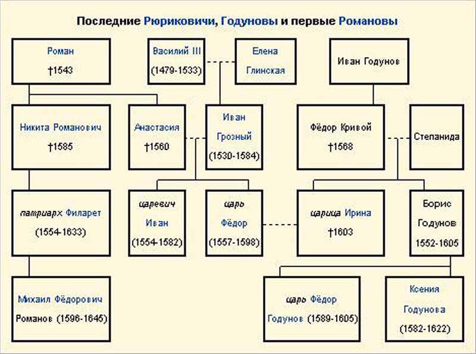

Годуно́вы — угасший русский дворянский род, происходящий из Костромы от боярина Дмитрия Зерно, служившего великому московскому князю Ивану Даниловичу Калите (1288—1340). По другой версии, от мурзы Чета, выехавшего из Орды в Москву, принявшего крещение с именем Захария и выстроившего в Костроме Ипатьевский монастырь. Династия русских царей (1598—1605). Род внесён в Бархатную книгу. При подаче документов (март 1682), для внесения рода в Бархатную книгу, были предоставлены две отдельные родословные росписи Григория и Дмитрия Годуновых, а позже их совместная родословная роспись (1686). Как пишет Баскаков Н. А., русский лингвист-тюрколог и доктор филологических наук, фамилия Годунов происходит от тюрк. gödün (глупый, безрассудный).
